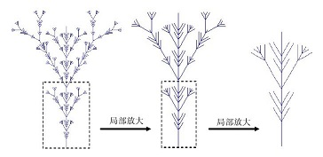

Chapter 1 引论
网络结构的普遍性
问题往往比答案更重要
诚然，如何发现并认识问题，是我们开始探索的第一步。但是如果仅仅给出对事物表面的认识，和所谓的解释后便弃之不管，未免显得过于粗陋和简单了，任何一个问题刚刚出现后就给出的答案都是禁不住拷问和推敲的，我们往往需要对问题和我们给出的答案进行源源不断的迭代，才能向人类自己交出一份满意的答案。
书中提到，随着社会的发展，人类各种形态的组织结构越来越呈现出网络化的特征。如今，人类已经生活在一个充满着各种各样的复杂网络的世界中。具体到各个领域，书中从互联网 1 ，万维网 2 ，电力与交通 3 ，生物 4 ，经济与金融 5 ，社会 6 ，科研教育网络 7 几个方面分别介绍了，网络在各个领域带来的一些新的机遇和挑战。

 上述是两个由5个点构成的图，这两个图（图一中的五个点指的是五边形的五个点）彼此是具有相同的拓扑性质的，为什么这样说呢，首先我们可以把图二看作是图一在某条线上的投影，等于说将图一的点“挤压在一条线上”，有些人可能要说了，挤压到一条线上。我们可以看到，图一和图二中图形的性质完全没有发生变化，在图一中，点都是两两相连的，在图二中也是如此，且不出现多余的边，实际上我们称这样的图为全通图。我们找不到任何图一中点有/没有而在图二中没有/有的性质。所以，我们可以看到，拓扑中我们不关心点是怎样画出来的，画在哪里，而转过头来看点和点间具有怎样的概念位置关系。
我在上文中将“位置”加上了概念两个字，意思就是说明这个位置指的并非是完全的物理位置，而是一种相对位置、概念位置，位置是由它和关联物体的联系情况和它本身的一些性质决定的。
今天早上李老师的课上的一个例子启发了我，他讲述了曾经见过的一个项目，一家公司企图建立一个“社区社交网络”，人们习惯性的认为，住在一起的人理应很相近，他们没有建立一定的社交网络一定是因为缺少一个合适的工具，这家公司采取了一些措施试图建立这样的一个社区网络，通过一些集体优惠活动强化社区社交网络间用户的联系，但遗憾的是这种通过优惠活动来强化用户关系的活动失败了。从这个尝试我们可以看出，有些属性并不能帮助建立起节点与节点之间的联系，就像物体的大小并不能直接影响到物体间是否存在相同的拓扑性质一样。这既帮助我们理解了为什么拓扑可以堂而皇之的忽略掉物体的*形状*等性质而进行讨论，同时又指导了我们在以后的学习过程中，不要仅凭常识来建立目标网络中节点的联系，在错误的联系下，可能不能发现我们想要发现的规律，或者说对于不确定对节点联系多大的属性，一定要将其赋予对边的影响的不同权值进行讨论。
上述是两个由5个点构成的图，这两个图（图一中的五个点指的是五边形的五个点）彼此是具有相同的拓扑性质的，为什么这样说呢，首先我们可以把图二看作是图一在某条线上的投影，等于说将图一的点“挤压在一条线上”，有些人可能要说了，挤压到一条线上。我们可以看到，图一和图二中图形的性质完全没有发生变化，在图一中，点都是两两相连的，在图二中也是如此，且不出现多余的边，实际上我们称这样的图为全通图。我们找不到任何图一中点有/没有而在图二中没有/有的性质。所以，我们可以看到，拓扑中我们不关心点是怎样画出来的，画在哪里，而转过头来看点和点间具有怎样的概念位置关系。
我在上文中将“位置”加上了概念两个字，意思就是说明这个位置指的并非是完全的物理位置，而是一种相对位置、概念位置，位置是由它和关联物体的联系情况和它本身的一些性质决定的。
今天早上李老师的课上的一个例子启发了我，他讲述了曾经见过的一个项目，一家公司企图建立一个“社区社交网络”，人们习惯性的认为，住在一起的人理应很相近，他们没有建立一定的社交网络一定是因为缺少一个合适的工具，这家公司采取了一些措施试图建立这样的一个社区网络，通过一些集体优惠活动强化社区社交网络间用户的联系，但遗憾的是这种通过优惠活动来强化用户关系的活动失败了。从这个尝试我们可以看出，有些属性并不能帮助建立起节点与节点之间的联系，就像物体的大小并不能直接影响到物体间是否存在相同的拓扑性质一样。这既帮助我们理解了为什么拓扑可以堂而皇之的忽略掉物体的*形状*等性质而进行讨论，同时又指导了我们在以后的学习过程中，不要仅凭常识来建立目标网络中节点的联系，在错误的联系下，可能不能发现我们想要发现的规律，或者说对于不确定对节点联系多大的属性，一定要将其赋予对边的影响的不同权值进行讨论。
网络科学的研究内容和特点
网络科学是着眼于[复杂网络](#complexnetwork)的定量与定性的特征的科学理解，首先网络科学所要研究的就是看上去互不相同的复杂网络（这里看上去互不相同是指他们在形态上的不同，例如交通网和电力网，并非指的是在补充内容[复杂网络](#complexnetwork)中所介绍的，自组织，自相似，吸引子等特点的不同）间的共性和处理他们的普适方法。网络科学中研究问题的来源是各种实际的网络，它所产生的共性概念，方法，理论又可以发过来为各种实际问题的分析和设计提供宏观的指导和具体手段。这也是我们利用抽象的目的所在，*从现实中来，到现实中去*。
例如，许多网络都有一个共同的性质，社团性质（Community Structure 我个人觉得将社团译为群落可能更好，社团本身可能意味着其中的节点具有很高的智能性，但是实际上并非如此，虽然我们认为节点和网络可能有很多令人惊奇的智能性，但是称之为社团仍感觉有些言过其实）。社团内部的结合十分紧密，社团间的连接却显得比较稀疏。因此需要我们对社团进行定量的刻画，并且针对社团结构涉及网络的挖掘算法。另一方面，当把社团挖掘算法应用到实际中去的时候，就必须结合具体网络的特征……此外网络科学也致力于沟通各个不同的学科，同时也希望利用不同学科的能力来帮助网络科学的发展。 那么让我们回到开头的那句话------*问题往往比答案更重要* 那么网络科学研究的问题，或者说是难点在哪里呢，我认为这才是本章节中最重要的内容，之前所谓的抽象模型的确有一定的道理，学习离不开这些高度抽象的方法论，但是《如何阅读一本书》中作者提到了另外一句发人深省的话*“越简单的道理，越有普适性，但是同时，它能做的事情就越少”*，当我们初入一门学科时，也应当去理解一些具体的实际的问题，而非一味的追求完善的方法论，它太具有普适性了，所以落实到实际中需要的变化太多。 网络系统的复杂性体现在下面几个方面： 1. 结构复杂，表现点为节点数目巨大，网络结构呈现多种不同的特征 2. 网络进化，表现在节点或链接的产生或消失（网络节点的状态随时间变化，随时可能消失） 3. 连接的多样性，节点间的链接存在权重差异，还存在方向性（表现为有向图），还可能有类似神经网络一般，兴奋/抑制的链接存在 4. 动力学复杂,节点可能属于非线性动力学系统，例如节点的状态随时间发生复杂变化 5. 节点的的多样性 6. 多复杂性融合，以上的五种复杂性融合 这些复杂性为对网络系统的学习造成了一定的困难，这些是源于网络系统本身的困难，但还存在另外一些更为实际的问题需要去解决，书中提到了对网络系统进行学习讨论时的一些基本步骤，并指出了每一个步骤主要解决哪些问题，或者面临哪些难点， 按照书中的说法，网络科学的研究大致划分为五个步骤： 1. 发现，展出网络中的拓扑结构的特点，和度量这些特点的方法。但是这个过程我们有一个问题摆在眼前，关于实验数据的问题，那互联网来讲，几乎不可能通过简单的技术手段抓取网络上的所有节点数据，对于如此数目庞大而又复杂的网络结构几乎不可能用传统的图论方法进行分析，但是假如采取抽样的方法选取样本网络进行分析的话，如何保障样本网络能够具有目标网络的全部特征呢？除此之外书中还指出了，网络中的节点和节点间关系的变化会随着时间变化，这更为学习的过程带来难度。 2. 建模，难点同上述，书中告诉我们建模有两个方向，一个方向是尽可能的穷举目标网络中的所有拓扑结构（书上认为这种方式会存在很多难以解释的问题），另外一个是不考虑任何具体性质的概念模型，实际的学习中应当倾向于查找其中两个方向平衡点。 3. 分析，这个阶段的主要目的是在前两步的基础上了解网络结构和工之间是如何相互影响的，这包括网络上的传播，博弈和同步行为等。这种研究的根本难度在于，我们很容易判断其中的相关关系，但是却很难确定其中是否有某种因果关系，在我的理解下，无法找到严格的因果关系意味着没有办法确定的说出模型的抽象性质，一旦抽象性质不能被确定，那么某些特殊的结构便不能迁移到其他问题上，这就意味着对于网络科学的研究一直无法产生什么共性的认识和突破，因为每当一个新的问题产生，问题中出现了你之前熟悉的模型，但是你仍然无法确认这个模型或者说结构会为你带来什么，仍要进行重复的试错环节。 4. 设计，这个步骤是为已有的网络进行优化的过程，让已有的网络变得更加健壮，安全和高效 在本节的最后，作者大致介绍了本书中知识讲授的先后顺序，其实一本书我认为最重要的两个部分一个是他的preface，另外一个就是contents，这两个部分提纲挈领的帮助读者梳理了整本书的脉络，对知识有整体的把握，这是十分重要的，甚至比单独的正文更加重要，特别是在每本书知识越来越深入的今天，很容易让读者迷失方向，不知道整本书前后知识的关联性，各个部分的知识在这本书的知识体系下是什么样的一个地位。但可惜的是，本章节介绍的内容实在是有些过多了，在这本书读完后我会回过头来再写一篇关于整个书知识体系的脉络，现只能将部分内容摘录如下： 第一部分： 第一和第二章节，主要介绍网络科学的概况和图论的入门知识 第二部分： 第三至五章，介绍实际网络的连通性，度相关性，大名鼎鼎的hits和pageRank算法（这已经是我第三次在书中看到PageRank了，真的是足以说明这个思路是多么的有突破性） 第三部分： 第六至八章，讲述了网络的拓扑模型，[小世界模型](#_13)和无标度网络 第四部分 ： 第九至十一章，着重于网络动力学的讨论。
补充
拓扑
遗憾的是以我现在的能力还不能完全的解释到底什么是拓扑，但是这并不意味着我不能理解拓扑中那些简单并且具体的概念，并给出为什么从拓扑的角度考虑问题有一定的益处。简单地来讲拓扑变化就是图形只经过拉大、缩小、弯曲且图形中点不存在重合或增加的情况而变成的另外一个可能形状迥异的图形。换句话说我们研究图形的拓扑性质时只关注图形中物体间的位置（概念位置）关系而不考虑他们的大小。那么如何体现在这个专题主题“网络”上大概是怎样的呢
上述是两个由5个点构成的图，这两个图（图一中的五个点指的是五边形的五个点）彼此是具有相同的拓扑性质的，为什么这样说呢，首先我们可以把图二看作是图一在某条线上的投影，等于说将图一的点“挤压在一条线上”，有些人可能要说了，挤压到一条线上。我们可以看到，图一和图二中图形的性质完全没有发生变化，在图一中，点都是两两相连的，在图二中也是如此，且不出现多余的边，实际上我们称这样的图为全通图。我们找不到任何图一中点有/没有而在图二中没有/有的性质。所以，我们可以看到，拓扑中我们不关心点是怎样画出来的，画在哪里，而转过头来看点和点间具有怎样的概念位置关系。
我在上文中将“位置”加上了概念两个字，意思就是说明这个位置指的并非是完全的物理位置，而是一种相对位置、概念位置，位置是由它和关联物体的联系情况和它本身的一些性质决定的。
今天早上李老师的课上的一个例子启发了我，他讲述了曾经见过的一个项目，一家公司企图建立一个“社区社交网络”，人们习惯性的认为，住在一起的人理应很相近，他们没有建立一定的社交网络一定是因为缺少一个合适的工具，这家公司采取了一些措施试图建立这样的一个社区网络，通过一些集体优惠活动强化社区社交网络间用户的联系，但遗憾的是这种通过优惠活动来强化用户关系的活动失败了。从这个尝试我们可以看出，有些属性并不能帮助建立起节点与节点之间的联系，就像物体的大小并不能直接影响到物体间是否存在相同的拓扑性质一样。这既帮助我们理解了为什么拓扑可以堂而皇之的忽略掉物体的*形状*等性质而进行讨论，同时又指导了我们在以后的学习过程中，不要仅凭常识来建立目标网络中节点的联系，在错误的联系下，可能不能发现我们想要发现的规律，或者说对于不确定对节点联系多大的属性，一定要将其赋予对边的影响的不同权值进行讨论。
网络的分类---复杂网络和简单网络概述
网络的最简单抽象就是一个点（*V*）集和一个连接点的边（*E*）集的组合（*G*），假设顶点集中元素的个数为n个，那么一个简单图 8 的边集中所有的最多的元素个数为 n(n-1)/2 9 （这个性质在之后会经常用到，需要体会一下这个数字的深刻含义）。首先我们先明确两个描述网络性质的定向指标------特征路径长度和聚合系数
特征路径长度（characteristic path length）是指点集中任意两点路径长度的均值，点集中任意两点的最短路径定义为两点的路径长度，这是一个反应网络全局特征的指标。
聚合系数（clustering coefficient），假设某个节点有k条边，则k条边连接的节点（k个）直接最多可能存在的边数为k（k-1）/2，用实际存在的边数除以最多可能存在的边数得到的分数值，定义为这个节点的聚合系数。所有节点的聚合系数的均值定义为网络的聚合系数。聚合系数是网络的局部特征，反映了相邻两个人之间朋友圈子的重合度，即该节点的朋友之间也是朋友的程度。
对于规则网络，任意两个点之间的特征路径长，但是聚合系数高，这意味着，你朋友之间是朋友的可能性大，同时规则网络中的特征路径的长度随着网络地规模线性增长。
复杂网络是指具有自组织 10 ，自相似 11 ，吸引子 12 ，小世界 13 ，无标度 14 中部分或全部性质的网络称为为复杂网络，这些复杂网络具有不同的性质，他们的聚合系数和特征路径长度也有不同的特点。实际上对于网络种类的划分方式多种多样，就像维基百科中说的那样
有人用相同的名称代表不同的含义，有人用不同的名称指代相同的东西但无疑的是，我们更加看重是什么，而非叫什么。 [> 网络科学研究的内容和特点](#网络科学研究的内容和特点)
^ 1 ：互联网在21世纪互联网已经成为全球性的社会-技术关键基础设施，并将产生更多，更新甚至是难以预见的技术、应用、服务，其中物联网就是十分突出的一项，Internet的安全性，可控性，鲁棒性，可管性，可扩展性等问题都变得日益重要，这需要我们对Internet的行为及其演化有更为深刻的理解。对于Internet拓扑性质的研究，又可分为IP地址层次，路由器层次，自制系统层次
^ 2 :万维网 作者在此处强调的主要是网页层面上的网络关系，比如著名的pagerank算法，就是基于网页间的相互关系来进行迭代计算的，书中提到了一些特殊的关系，比如“闭环”，“悬挂”，等概念在pageRank的论文中也有进行过讨论。稍后我会给出对于pagerank的讨论，涉及到一些线性代数的运算问题，仍需要进行进一步的学习。
^ 3 :电力交通网 电力交通网是一个书中作者举的例子，代表了包括水网，通信网络等一系列影响到国家正常运转甚至是安全的网络，作者提到了大连理工大学一名教授发表的一篇关于美国的电网很难承受住像样的攻击的论文，在这些网状结构中，节点与节点间总会有大大小小的联系，经常的一个节点的损坏很容易导致相邻节点出现问题，这样的情况出现在交通网络中也会出现，这很好理解，如何设计出健壮的网络系统是一个重点的问题。
^ 4 :生物网络 在疾病的传播，病毒变异的路径，转录的关系，酶与代谢物关系，蛋白质物理连接方面都有应用
^ 5 :经济金融网络 经济全球化是一把双刃剑，在上学期的供应链管理的期末考试题中提到了上世纪末的亚洲金融危机，正是因为经济全球化的影响，各个整个经济网络的局部有一些不太健康的，严重依赖外部的节点，就如韩国和日本这种国家，本身内需不足，大量的进出口活动维持着国家的经济情况。局部出现问题，严重连带着相关的节点同时出现问题。
^ 6 :社会网络 书中在这部分介绍了六度人脉理论，但是实际上我们不难发现，六度人脉实验谈不上十分严谨，但是仍然能够反映一些问题，现实生活中存在着一种高聚合系数，同时又具有低特征路径长度的“小世界”网络。其中，书中还提到了一个十分有趣的问题，人与人之间的弱连带关系所传递的信息量实际上大于强连带关系所传递的信息，原因可能在于在于对于强连接关系的人中往往得到的都是相似的信息，而弱连带关系中得到的往往是新的信息，这指导我们，实际上指导我们不应该完全放弃那些低权值的边或者节点，这些节点可能带我们一些新的信息。
^ 7 :科研教育网络 书中指出了目前来讲，科研团队体积存在着增大的趋势，不同学校，地区，学科的人更多的开始开展跨学科的合作。同时，通过网络寻求帮助也时常能找到更加明智和高效的解决方案，如今，网络化的思想进行教育改革也在各地兴起。
^ 8 :简单图是指没有重复边和自环结构的图，但是这里要区分简单网络和简单图的概念
^ 9 : n(n-1)/2虽然是个很好得出的结论，但是建议采用C2n ，即组合数的方式来进行思考，对于以后可能会经常出现利用组合数和排列数来处理问题的情况
^ 10 : 自组织性，系统的自组织性的研究在不同的领域都有了相当长时间的历史，不同的学科对自组织性也有一些不同的看法，但多数学科中都认同具有自组织性的系统能够让系统本身朝着良性的方向发展，修复自身的缺点（进化，熵减，由粗糙到精细）。实际上人类就是一个具有高度自组织性质的群体，我们能通过手段进行社会分工，调配资源，所以我们进化的速度要远远超过其他物种。这又让我想到了之前看到的一个叫社会熵的概念，自发的无序的系统总是朝着熵增的方向（不稳定的状态，熵的概念我最早接触是在高中化学中，但在那之后就没有机会去系统的接触熵这个概念了）发展，所以从某种意义上来讲局部的熵增现象是无法避免的，熵增就必须向外交换能量才能恢复到相对稳定的状态，那从某种意义上来讲，战争可能是不可避免的，同样的，几次战争后不同国家、人种间确实形成了一段时间相对稳定的关系，并取得了高速发展。
^ 11 : 自相似性 局部和整体高度相似的网络结构，像是递归产生的 
^ 12 : 吸引子 系统会稳定的朝向吸引子方向发展
^ 13 : 小世界 介于复杂网络和规则网络之间，具有很高的聚合度的同时又有很低的特征路径长度的网络，据百度百科描述，这样的网络中可能增加少量的 short cuts就能够使得结构性质发生巨大的改变，小世界网络中的节点度数呈现正态分布
^ 14 : 无标度网络 无标度网络具有严重的异质性，各个节点的读书存在严重的分布不均的情况，少数被称为hub的节点具有很高的度数，而其他的部分只有很少的度数，因此，这些少数的hub节点在网络中扮演者至关重要的作用，无标度网络中节点的度数呈现幂律分布。